Press & Events
Highlights from conferences, awards and public events featuring members of the Vujic Lab.
An inspiring afternoon with the British Heart Foundation
The Vujic Lab was delighted to welcome staff from the British Heart Foundation (BHF) for an inspiring afternoon showcasing our research into cardiometabolic health, exercise and cardiovascular resilience. It was a pleasure to share our science and introduce the team behind our work. A huge thank you to the BHF for your continued support of cardiovascular research and for everything you do!
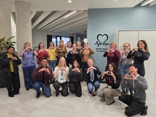
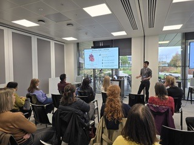
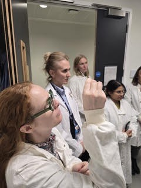
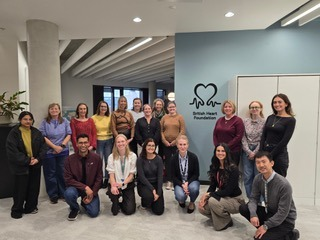
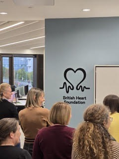
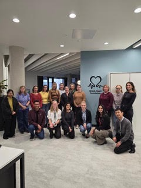
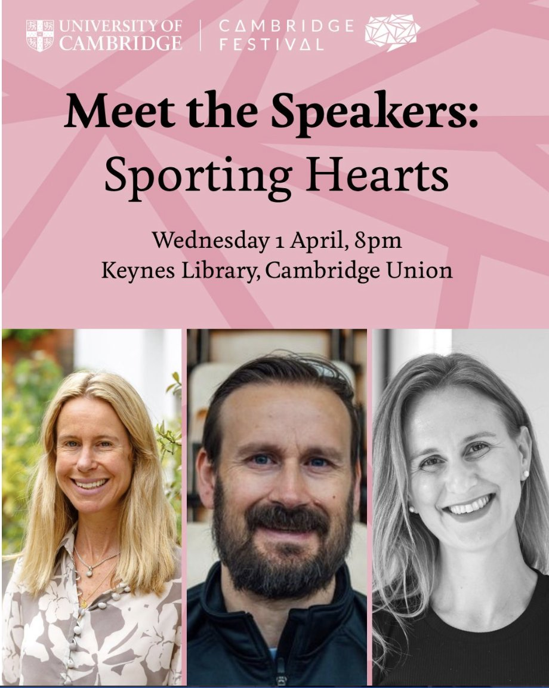
“Meet the Speakers: Sporting Hearts” — Dr. Ana Vujic joins the panel. Wednesday 1 April, Keynes Library, Cambridge Union.
About the event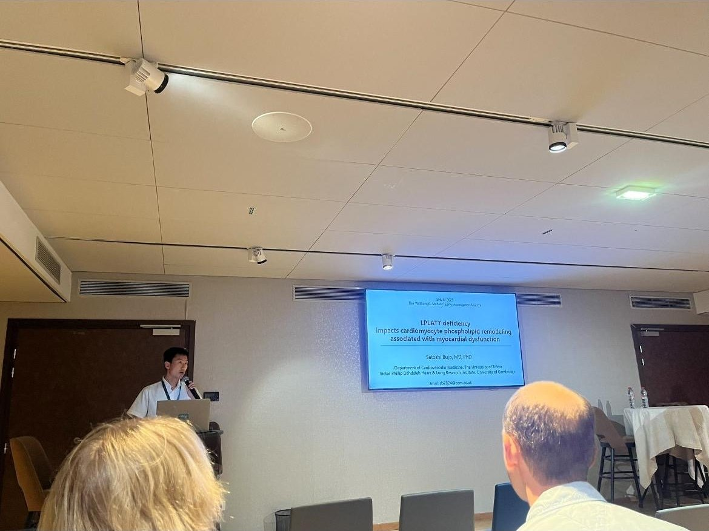
Satoshi Bujo presenting his award-winning work in the Early Investigator Awards session.
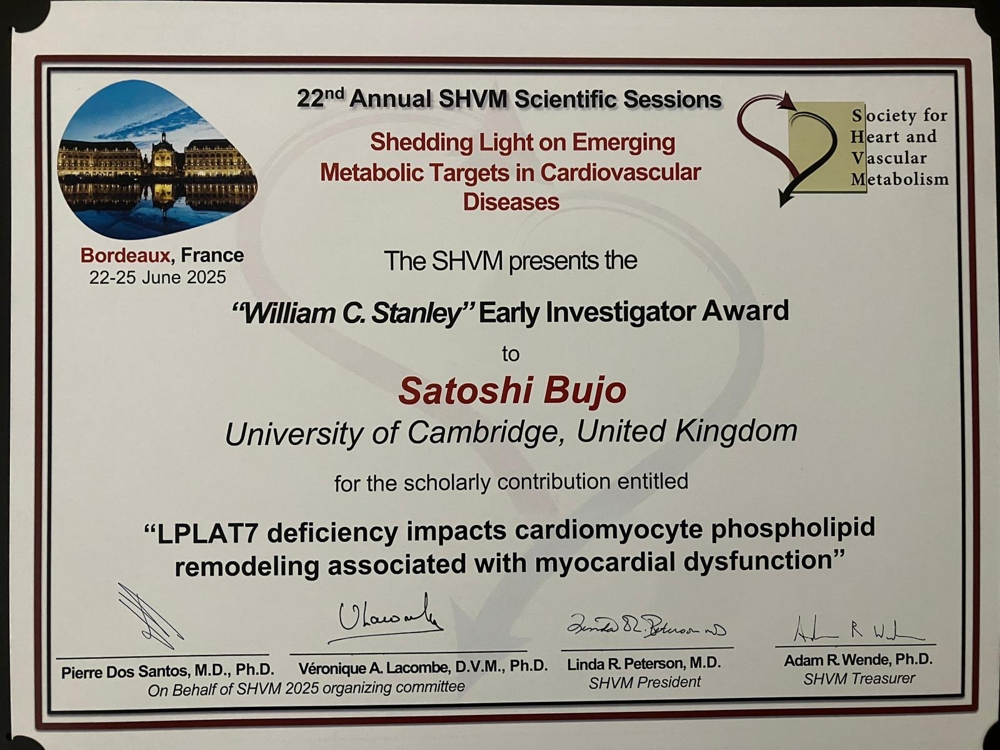
Satoshi Bujo receives the “William C. Stanley” Early Investigator Award at the 22nd Annual Scientific Sessions of the Society for Heart and Vascular Metabolism, 22–25 June 2025, for “LPLAT7 deficiency impacts cardiomyocyte phospholipid remodeling associated with myocardial dysfunction”.
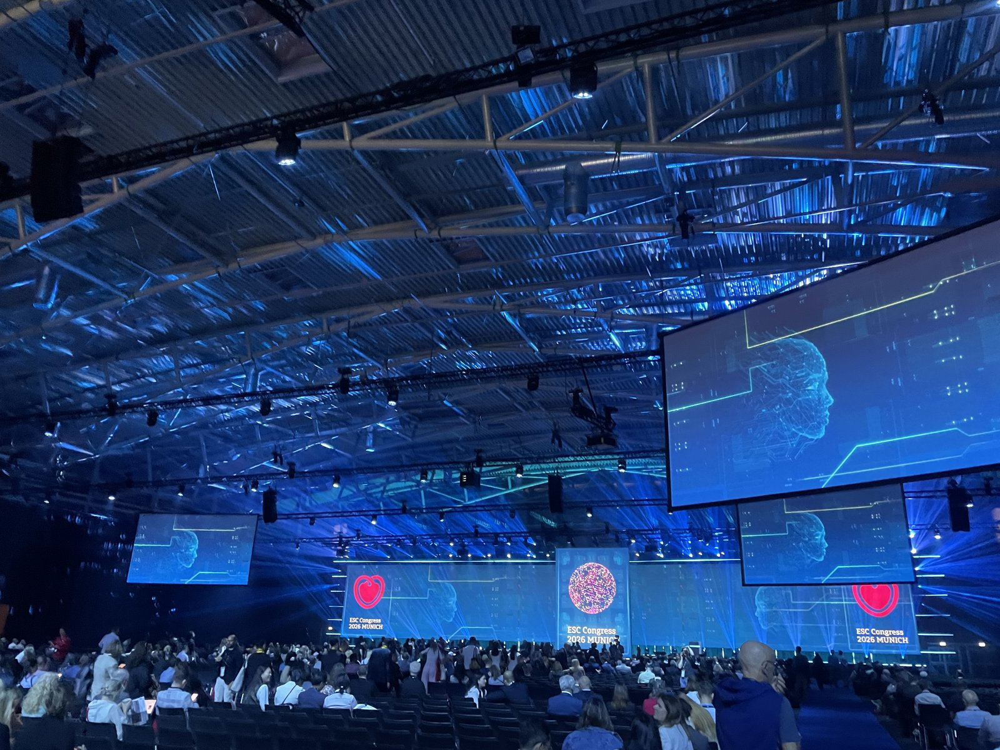
The main hall at the European Society of Cardiology (ESC) Congress.
About the ESC Congress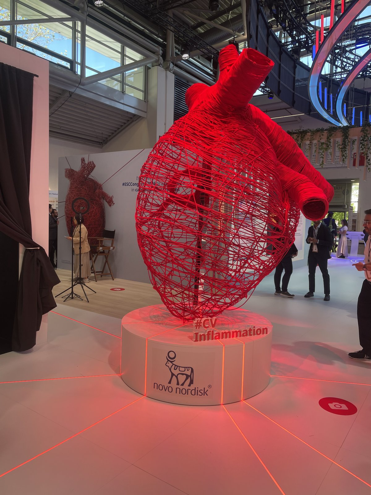
The exhibition hall at the ESC Congress.
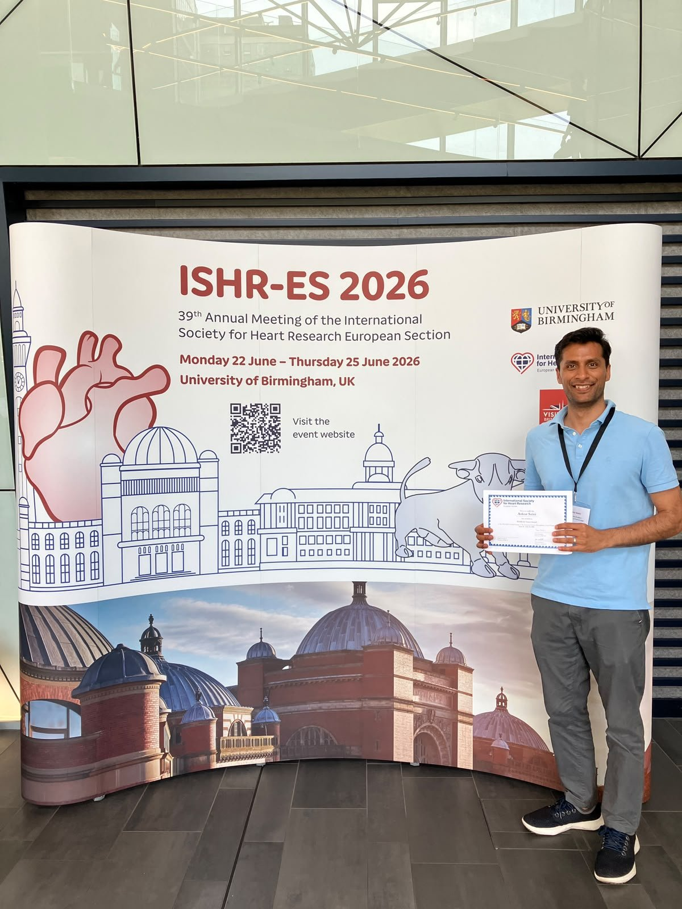
Ankur Saini receives an award at the 39th Annual Meeting of the International Society for Heart Research European Section, 22–25 June 2026.
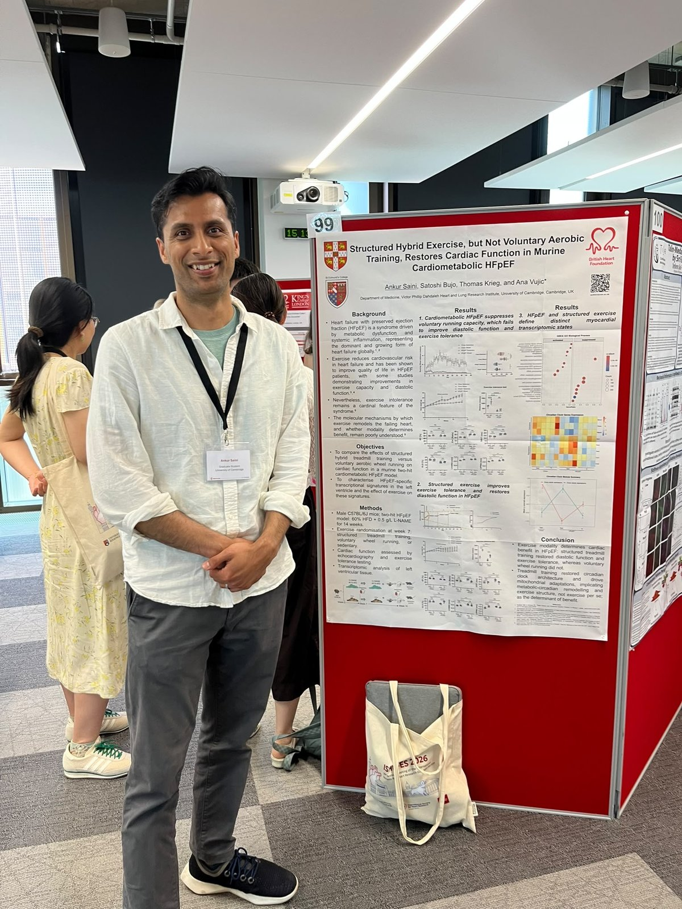
Ankur Saini presenting the lab’s poster, “Structured Hybrid Exercise, but Not Voluntary Aerobic Training, Restores Cardiac Function in Murine Cardiometabolic HFpEF” (Saini, Bujo, Krieg and Vujic).
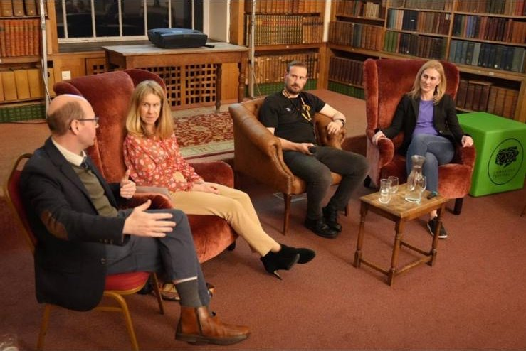
The “Sporting Hearts” panel discussion, as shared by the Victor Phillip Dahdaleh Heart and Lung Research Institute.